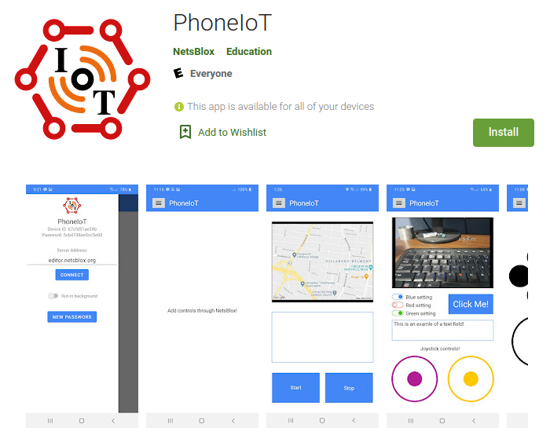

NetsBlox is an open-source web- and cloud-based visual programming environment. Its visual notation is based on Scratch from MIT and uses the open source JavaScript code base of Snap! from Berkeley. Both of these are extremely successful tools in K12 computer science education. NetsBlox adds the capability of networking and enables distributed programming at a level accessible to young learners. This helps teach 21st century skills and makes programming more engaging.
NetsBlox also enables programs running on separate computers to talk to each other. Hence, students can write multi-player games such as Tic Tac Toe or Battleship and other truly distributed programs. NetsBlox supports collaborative program editing similar to how Google Docs work. This opens up new ways of project-based learning, new ways of teaching, as well as enables pair programming even when students are not sitting at the same table. Unlimited undo/redo is also supported.
NetsBlox opens up the internet with its vast array of public domain scientific and other data sources making it possible to create STEM projects such as displaying seismic activity anywhere on Earth using an interactive Google Maps background. Similarly, weather, air pollution, and many other data sources such as the Open Movie Database and the Sloan Digital Sky Server are available. We are adding new services on a regular basis. The same facility can help implement more complicated multi-player games by providing server-side support.
If you prefer a more hands-on learning experience, there is plenty of information built into the NetsBlox editor to introduce you to some of the new features it has added to Snap! Drag and drop any block from the left menu into the center; you can click on any block to execute it individually, or connect them together to perform complex logic. One of the primary focuses of NetsBlox is the Network tab in the upper left corner, which has many advanced blocks for performing complex internet exchanges in a way that is still extremely simple. If you're ever unsure of how to use a block, you can right click it and select help... for more information. You can also view the official NetsBlox documentation for more detailed information about how to use certain services/RPCs, as well as some general information and walkthroughs.
Check out Demos for some example videos using NetsBlox.
PhoneIoT is an open-source mobile app for iOS and Android which can be used to connect the device to NetsBlox. Once connected, a NetsBlox service of the same name can be used to communicate back and forth between the mobile device and a student's NetsBlox project running in the browser. The PhoneIoT service allows access to many of the device's sensors (e.g., accelerometer, orientation, location, camera), as well as the ability to customize the app's display with interactive components such as buttons, image displays, joysticks, and more, all from within NetsBlox. PhoneIoT uses the same RPC and message passing paradigms used by other NetsBlox services, making PhoneIoT relatively easy to pick up for students who are already familiar with NetsBlox.
To get started, simply install the PhoneIoT app on your mobile device, which is available free of charge through the App Store (iOS) or Google Play store (Android). Once installed, launch the app; you should see an open menu on the left side of the screen. Notably, near the top of the menu, there is an area that shows your device id and password (default zero), which will be needed to connect to the device from a NetsBlox project. To connect the device to the NetsBlox server, simple press the Connect button (all defaults are acceptable).
Once in a NetsBlox project, you can use call or run blocks with the PhoneIoT service (first dropdown) to invoke any number of RPCs (remote procedure calls) (second dropdown) to communicate with the device. Most PhoneIoT RPCs require a device id, which you can get from the app's menu. However, before you can access the phone, you need to run a special RPC called PhoneIoT.setCredentials, which is where you enter your device password (shown in the app menu). The PhoneIoT documentation has more detailed information on general usage and specific RPCs that you might want to use.
Check out Demos for some example videos using PhoneIoT.